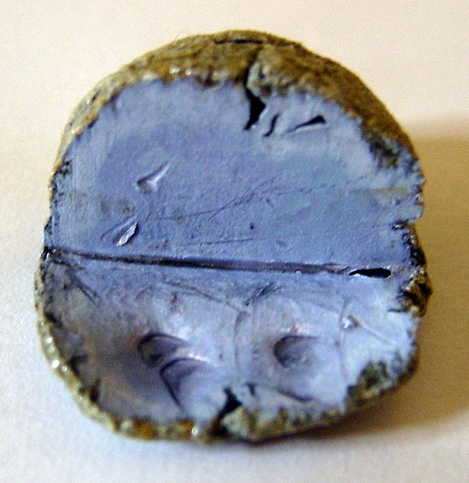

Potasio

Es un metal alcalino de color blanco-plateado,
que abunda en la naturaleza en los elementos relacionados con el agua
salada y otros minerales. Se oxida rápidamente en el aire, es muy reactivo,
especialmente en agua, y se parece químicamente al sodio.